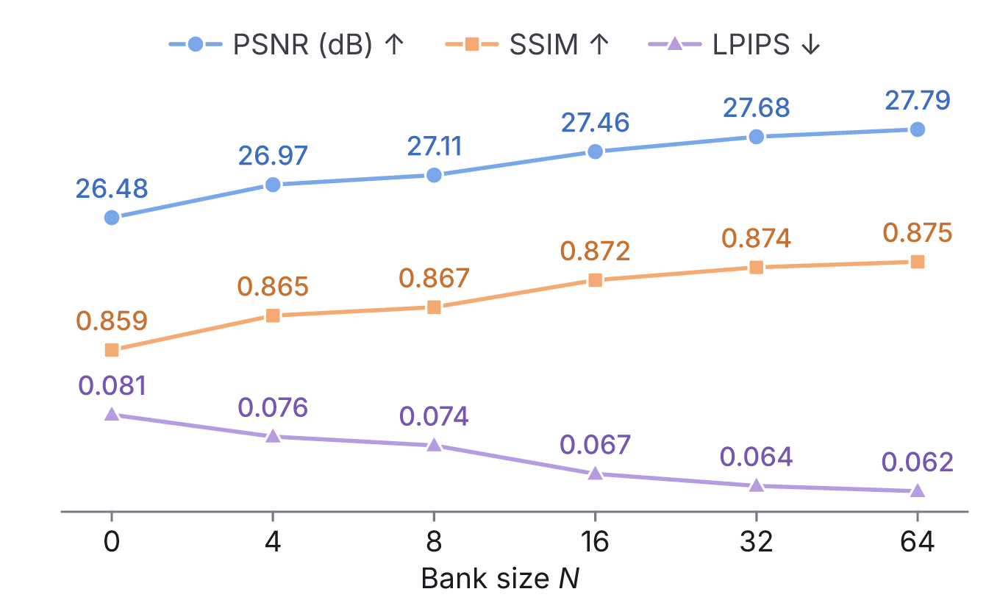
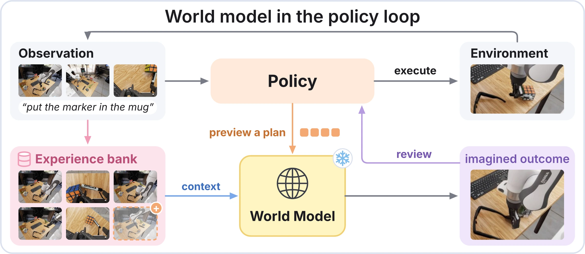

Method
New Moments, Familiar Dynamics
A numerical robot action has no universal visual meaning: the same command can look like leftward motion in one camera and rightward motion in another. For every new query, DejaWorld retrieves similar moments from its own past experience and uses them to predict the future, without ever seeing the query's future. No calibration, no fine-tuning, only experience.
A new query: given the current frame and the next 16 actions, predict the resulting video.
Scaling along three dimensions
Training-time scaling
Learning from Any Robot, Camera, and Action Convention
One arm or two, any embodiment, any camera view, simulated or real: DejaWorld trains on all of it. Every sample even gets a random action convention, with its axes permuted and flipped, so that (x, y, z) may become (x, z, −y), and a random scale. Nothing fixed is left to memorize in the parameters, so the model must learn to adapt at inference time.
Heterogeneous training data
Simulated and real, single-arm and dual-arm.
RoboCasa
RoboTwin 2.0
DROID
Zero-shot on unseen setups
None of these recordings is in the training data. The model reads a few past interactions of the setup and predicts; each prediction is paired with its ground truth.
Results: comparison with baselines
| Method | LIBERO-Pro2.0 (simulation) | AnchorZ (real Franka) | ||||
|---|---|---|---|---|---|---|
| PSNR ↑ | SSIM ↑ | LPIPS ↓ | PSNR ↑ | SSIM ↑ | LPIPS ↓ | |
| SyncWorld w/o calib. | 28.87 | 0.907 | 0.047 | 25.31 | 0.871 | 0.118 |
| SyncWorld w/ calib. | 29.14 | 0.914 | 0.043 | – | – | – |
| Recent-8 | 28.82 | 0.913 | 0.046 | 24.35 | 0.862 | 0.135 |
| Fixed-weight selection | 29.48 | 0.916 | 0.038 | 26.09 | 0.879 | 0.103 |
| DejaWorld (ours) | 30.59 | 0.928 | 0.032 | 26.95 | 0.889 | 0.089 |
| Method | RoboDojo-Sim | RoboDojo-Real | ||||
|---|---|---|---|---|---|---|
| PSNR ↑ | SSIM ↑ | LPIPS ↓ | PSNR ↑ | SSIM ↑ | LPIPS ↓ | |
| Recent-8 | 27.82 | 0.861 | 0.129 | 22.65 | 0.851 | 0.182 |
| Fixed-weight selection | 29.32 | 0.879 | 0.095 | 23.52 | 0.864 | 0.148 |
| DejaWorld (ours) | 29.83 | 0.878 | 0.099 | 23.80 | 0.869 | 0.145 |
SyncWorld w/ calib. has no result on AnchorZ: the set is a pre-recorded real-robot dataset, so the calibration sequence that SyncWorld needs cannot be collected for it.
Test-time scaling
Prediction Improves with Experience
After training, the model is frozen. Every episode the robot finishes is added to its experience bank, and for each prediction the model reads just eight segments picked from that bank. A larger bank offers better segments to pick, so the prediction gets more accurate: from 0 to 64 episodes, PSNR rises at every step, on single-arm robots in simulation and the real world and on real dual-arm robots.
One query, a growing bank
A larger bank offers more experience for dynamics grounding, so each prediction can draw on more useful context.
Prediction quality vs. bank size

| Bank size N | 0 | 4 | 8 | 16 | 32 | 64 |
|---|---|---|---|---|---|---|
| LIBERO-Pro2.0 | 28.90 | 29.64 | 29.71 | 29.99 | 30.13 | 30.23 |
| ManiSkill | 25.56 | 26.09 | 26.20 | 26.31 | 26.45 | 26.50 |
| AnchorZ (real) | 24.98 | 25.18 | 25.42 | 26.09 | 26.46 | 26.64 |
The bank grows from the query's own episode alone (N = 0) to 64 other episodes, and each larger bank contains every smaller one. The gains come from a larger pool of evidence to select from, not from a longer input or further training.
Inference-time scaling
World Model as a Tool in an Agentic Framework
A GPT policy calls DejaWorld as a tool. It previews up to three plans per decision and executes the one whose imagined outcome succeeds.
Task success on LIBERO
With a simulator that shows the true outcome of a plan, the same policy reaches 84%. What it lacks most is foresight of how its actions change the scene.
A world model supplies part of this foresight without a simulator. Recent-8, the less accurate world model, leaves the policy where it is alone, while DejaWorld, which grounds its predictions in the experience bank, raises its success rate.

